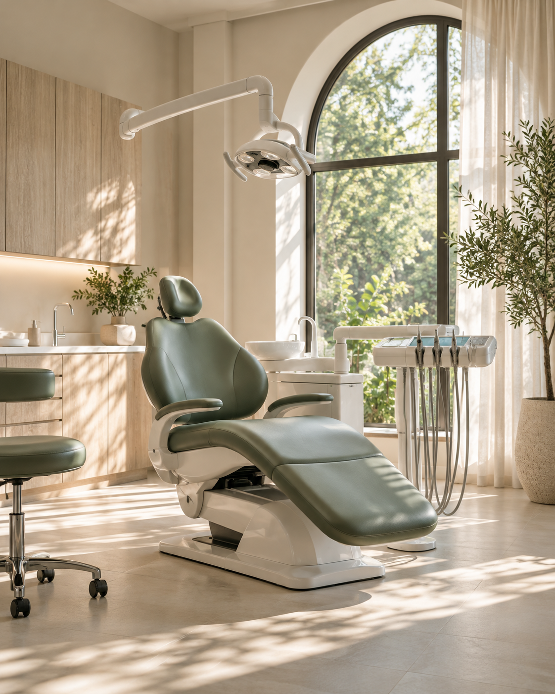

Primera visita
Un encuentro para conocer tus inquietudes y conversar sobre los siguientes pasos.
CUIDADO DENTAL, CON CALMA
Una forma más cercana de vivir tu visita al dentista. Tiempo para escucharte, explicaciones claras y atención a cada detalle.

CUIDADOS QUE SE ENTIENDEN
Una propuesta de servicios presentada sin complicaciones. El alcance se define en una valoración individual.
Un encuentro para conocer tus inquietudes y conversar sobre los siguientes pasos.
Seguimiento, hábitos cotidianos y cuidado de tu salud bucal con un enfoque cercano.
Un espacio para hablar de tus objetivos, resolver dudas y valorar opciones.
MÁS QUE UN CONSULTORIO
Luz natural. Una conversación sin prisa. La tranquilidad de saber qué sigue.
Qué te gustaría revisar y qué esperas de tu visita.
Explicamos las opciones y resolvemos tus preguntas.
Un plan claro, antes de dar el siguiente paso.
CON TODA CONFIANZA
Esta muestra propone una cita inicial para conversar sobre necesidades y explicar opciones. En una clínica real, el equipo profesional definiría la valoración.
Sí. El botón de agenda abre un ejemplo interactivo sin solicitar nombre, correo ni información médica.
No. Luma es una marca ficticia creada para mostrar una experiencia web. Los horarios son ilustrativos.